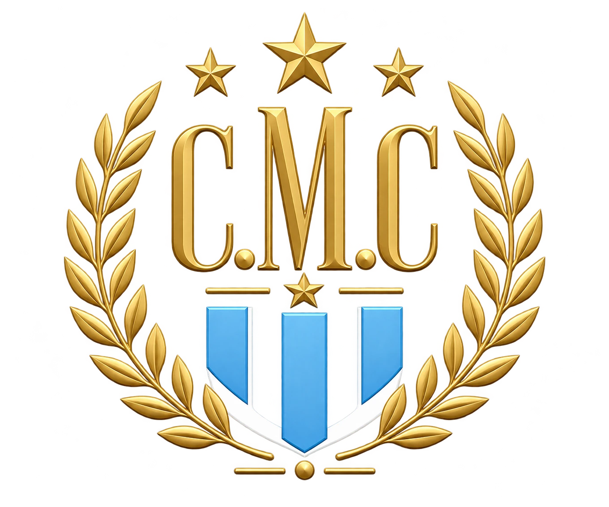

Reglamento
del torneo
8 contra 8 · Sábados · Inicio entre las 17:00 y las 18:00
Actualizado el 13 de octubre de 2026

Puntuación de un vistazo
La presencia se suma por separado y únicamente al publicar el resultado oficial del partido. Guardar los equipos no otorga puntos.
| Partido ganado | +2 |
| Partido empatado | +1 |
| Partido perdido | +0 |
| Presencia en el partido | +1 |
| MVP | +1 a repartir si hay empate |
| Goleador del partido | +0,5 a repartir si hay empate |
| Máximo asistidor del partido (pases de gol) | +0,5 a repartir si hay empate |
Desafíos: +0,5 al ganador y −0,5 al perdedor. Si empatan, cada uno conserva su punto de presencia.
Empates en premios: el punto de MVP se divide entre todos los más votados; el medio punto de goleador se divide entre todos los que hicieron más goles. Dos MVP reciben 0,5 cada uno; dos goleadores reciben 0,25 cada uno.
Encontrá la regla
Convocatoria y horarios
TORNEO APERTURA CHIQUIMAFIA 2026. Los partidos se juegan los sábados, en formato 8 contra 8. El horario de inicio se acuerda entre las 17:00 y las 18:00. El lugar habitual es el complejo El Más Grande; la organización comunica en el grupo el horario y lugar de cada fecha.
LA LISTA DE CONVOCADOS SE ABRE TODOS LOS MARTES A LAS 15:00HS EN EL GRUPO DE WHATSAPP.
ANOTARSE CON MENSAJE PROPIO. NO ES VÁLIDO ANOTARSE MEDIANTE SECRETARÍA SALVO INVITADOS FUERA DEL GRUPO.
EL ORDEN DE LOS CONVOCADOS SERÁ LA QUE REGISTRE EL DISPOSITIVO DEL ORGANIZADOR, SIN POSIBILIDAD DE CUESTIONAMIENTO POSTERIOR.
1 · Puntuación, MVP, pases de gol y desafíos
Art. 1. PRESENCIA. El integrante del torneo que figura en los equipos finales de esa fecha y asiste suma +1 punto por presencia. Este punto de presencia se asigna únicamente al publicar el resultado oficial del partido, no al guardar los equipos, y se contabiliza por separado de los puntos por resultado y de los premios individuales. Antes de publicar se corrige la lista para quitar o reemplazar a quien no asistió.
Art. 2. VICTORIA. Formar parte del equipo ganador suma +2 puntos por el resultado del partido. La derrota suma +0 puntos por resultado.
Art. 3. EMPATE. Formar parte de un equipo que empata suma +1 punto por el resultado del partido. El punto de presencia se contabiliza por separado.
Art. 4. MVP. Los participantes eligen al mejor jugador del partido mediante la sección «Votación de MVP» de la página del torneo. El premio total de la fecha es de +1 punto.
Inc. A) La votación abre el sábado a las 20:00 y dura 48 horas: cierra el lunes a las 20:00, hora de Argentina. El partido debe tener su resultado oficial publicado para que se pueda votar.
Inc. B) Cada participante puede emitir un único voto por fecha, identificándose con su nombre y confirmando su elección en la página. No necesita aprobación del administrador.
Inc. C) Solo se puede votar a un jugador convocado en esa fecha. No se permite votarse a uno mismo ni cambiar un voto ya confirmado.
Inc. D) Los invitados que jugaron el partido también pueden emitir su voto por sí mismos. Su voto no se asigna automáticamente a quien los convocó.
Inc. E) Mientras la votación está abierta, las barras doradas muestran su avance proporcional sin publicar el número exacto de votos. Al cerrar se publica el resultado.
Inc. F) Al cumplirse las 48 horas, se cuentan los votos efectivamente recibidos, aunque hayan votado pocos jugadores. No hay ballotage ni validación manual del MVP.
Inc. G) Si varios jugadores empatan en el primer lugar, se reparte el punto entre todos ellos por partes iguales: cada uno recibe 1 dividido por la cantidad de empatados. Dos reciben +0,5 cada uno; tres reciben un tercio cada uno.
Inc. H) Si no hay votos, no se asigna un MVP ni se otorga el punto. Corregir los goles o el resultado del partido conserva los votos, la fecha de cierre y el MVP ya resuelto; no inicia otra encuesta.
Art. 5. GOLEADOR DEL PARTIDO. El jugador que más goles anota en todo el partido recibe un premio total de +0,5 puntos. Si varios jugadores empatan con la mayor cantidad de goles, se reparte ese medio punto por partes iguales: cada uno recibe 0,5 dividido por la cantidad de empatados. Dos reciben +0,25 cada uno. Si el partido termina sin goles, no se asigna este premio. Los goles los registra y publica el administrador desde el marcador de la página; los jugadores ya no declaran sus propios goles. Una corrección reemplaza los datos de esa fecha y recalcula el premio al goleador, sin duplicar goles ni puntos.
Art. 5 bis. ASISTENCIAS DE GOL (PASES). Una asistencia de gol es el último pase intencional de un compañero que crea la oportunidad que termina en gol. Se puede registrar como máximo una asistencia por gol. Es una estadística distinta de la presencia en el partido (+1 por concurrir).
Premio al máximo asistidor: quien registra más pases de gol en todo el partido recibe un premio total de +0,5 puntos. Si varios empatan en la mayor cantidad, el medio punto se divide entre todos ellos: dos reciben +0,25 cada uno; tres reciben un sexto cada uno. No se suma +0,5 por cada pase. Si no hay pases de gol identificados, no se otorga este premio. Se aplica al publicar el resultado oficial y se recalcula al corregir los pases; no altera los votos ni reabre la votación MVP. Los premios de goleador y máximo asistidor son independientes.
Cuándo cuenta: un pase o centro que llega al goleador y permite convertir, aunque el goleador controle la pelota antes de definir. Un desvío leve de un rival no invalida la asistencia si el pase conserva su destinatario y sigue creando la misma oportunidad.
Cuándo no cuenta: un remate cuyo rebote en el arquero, un rival o un poste aprovecha otro jugador; recuperar una pelota que ya controló un rival; un gol creado por una jugada individual independiente del pase recibido; provocar un penal o un tiro libre; un gol en contra. No se otorga asistencia al propio goleador.
Ejemplo de rebote: Loria remata, el arquero rechaza y Franco convierte. Se registra el gol de Franco, sin asistencia de Loria, porque la acción anterior fue un remate y no un pase.
Registro: el administrador anota el gol y el pase. «Sin asistencia / Jugada individual» confirma que no hubo pase de gol; «Completar después» deja el dato pendiente y no otorga una asistencia. Un pase pendiente no se cuenta hasta que se identifica al asistidor. En caso de duda, decide la organización aplicando estos criterios. Las correcciones reemplazan el registro del gol, sin duplicar goles ni pases.
Art. 6. DESAFÍOS O DUELOS. Un integrante del torneo puede desafiar a otro participante del encuentro. Una vez aceptado el desafío, cada duelista pone en juego 0,5 puntos de su presencia y ambos juegan en equipos opuestos. Quien pertenece al equipo ganador recibe +0,5 puntos y quien pertenece al perdedor recibe −0,5. Por presencia, quedan con 1,5 y 0,5 puntos, respectivamente; los puntos por resultado y otros premios se contabilizan aparte. Si el partido termina empatado, no se suma ni se resta nada por el desafío y cada jugador conserva su punto de presencia.
Inc. A) Se entenderá que hay un duelo confirmado cuando un jugador envíe un mensaje al grupo arrobando al retado y este responda ese mensaje aceptando el mismo. No se aceptarán duelos que no hayan sido formalizados de otra forma (por privado, sin arrobar o sin responder sobre el mensaje arrobado)
Inc. B) Solo puede haber un duelo por fecha y el único duelo válido será el primer duelo que sea aceptado por el retado.
Inc. C) Se sobreentiende que quienes se batan a duelo, jugarán en equipos separados, por ende, estos serán capitanes y tendrán la opción de armar sus equipos de la manera y forma que ellos consideren justa.
Inc. D) Un retado no puede rechazar duelos por dos fechas seguidas. Si este ya ha rechazado un duelo, una vez se haya jugado la fecha en cuestión, el siguiente mensaje de solicitud de duelo será aceptado automáticamente sin necesidad de formalización.
Inc.E) Si el retado no asiste al siguiente partido por no haber entrado en la lista de convocados o por baja, perderá el duelo automáticamente y se dará lugar a otro duelo entre los asistentes.
Inc.F) Los jugadores que participen de un duelo no podrán retar ni ser retados en la fecha siguiente.
Inc.G) Si el retado, habiendo armado su equipo, pierde el encuentro por una diferencia de 5 goles o más, no tendrá derecho a pedir y/o aceptar un duelo el resto del campeonato. Encuadramos esta figura bajo el concepto “DOMADISIMO”.
Art. 7. CLASIFICACIÓN Y FASE FINAL. La clasificación reúne a los integrantes del torneo. Los invitados pueden completar los equipos, pero no se incorporan a la clasificación por ese motivo. La fase regular consta de 18 fechas. Una vez disputadas las 18 fechas, los primeros ocho jugadores clasifican a playoffs: cuartos de final, semifinales, partido por el tercer puesto y gran final. Los partidos de equipos posteriores a la fecha 18 no agregan puntos ni presencia a la clasificación de fase regular. Los cruces de playoffs se registran por separado. El campeón es el ganador de la gran final.
2 · Disciplina y sanciones
Art. 7. Integrante que se baje el sabado en el transcurso del día de partido resta un punto (-1) haya o no suplente.
Art. 8. Integrante que confirmó y no asiste sin excusa entendible (Comisión de evaluación decide) resta dos puntos (-2).
Art.9. Quién se anote en la lista de convocados y luego se baje sin suplente, resta medio punto (-0,5).
Art. 10. Quien llegue después del horario de inicio comunicado para esa fecha resta medio punto (−0,5), haya o no empezado el partido. También se aplica a quien se retire antes de finalizar, salvo lesión. El planillero o sus colaboradores informan estas faltas.
Art. 10.
Inc. A) Quien llegue más de 15 minutos después del horario de inicio comunicado para esa fecha resta 1 punto.
Art.11. Suplente que se baje de la lista, no tiene sanción, siempre y cuando siga teniendo la condición de suplente en la lista.
Art.12. Los jugadores que hayan sido sancionados con el art. 7, 8 o 10.
Inc.A. de este reglamento, pasaran a formar parte de la LISTA NEGRA. El jugador que esté dentro de esta lista, deberá cumplir con una fecha de suspensión, pudiendo anotarse en la lista de jugadores en la lista de convocados como último suplente y seguirá en esta misma condición hasta el día del partido (si se anotan más suplentes, sigue quedando como último suplente).
3 · Premios
Art. 13. El campeón del torneo se hará acreedor del premio que defina la organización. PREMIO A REVEER.
Inc. 13. A) Condiciones que debe cumplir el campeón para la recepción de su premio:
-presentarse al asado de fin de campeonato
Inc. 13. B) En caso de no cumplir con la condición requerida para la obtención de su premio, este pasará a ser entregado al participante que haya quedado en el segundo puesto, el cual a su vez, deberá cumplir con las condiciones que no pudo cumplir el ganador del torneo. Esto se extenderá a los siguientes puestos del campeonato hasta que un integrante cumpla con esta condición.
4 · Excepciones y reclamos
Art.14. No se contabilizarán puntos en los partidos jugados fuera de fecha, lugar y/u horario debido a feriados o eventos que provoquen una convocatoria diezmada.
Art.15. Cualquier reclamo por errores en la tabla de puntajes debe realizarse antes de jugarse la fecha siguiente a la fecha en la que el puntaje haya sido incorrecto.
5 · Armado de equipos
Art.16. Los equipos serán armados cuando el listado de jugadores titulares esté completo y los duelistas o la corrupbol determinen el momento adecuado.
Art.17. El armado de los equipos quedará librado a la buena fe de los que propongan formas o herramientas para que los mismos sean lo más parejos posibles.
Art.18. Si luego del armado de los equipos, alguno de los jugadores titulares suspende su participación (“se baja” en criollo) se deberán armar los equipos nuevamente desde cero salvo que sus capitanes estén de acuerdo en que los equipos igualmente quedarían parejos.
Art.19. Jugador/jugadores que vayan primeros en la tabla, no pueden intervenir en el armado de los equipos salvo participar en un duelo o en las fechas finales donde sólo el puntero y alguno de sus escoltas tengan chances matemáticas de ser campeones. En este caso, los encargados de negociar y armar los equipos serán estos mismos.
6 · Reglas de juego
El gol es válido EN CUALQUIER LADO DE LA CANCHA.
Los laterales se realizan con LAS MANOS y sobre la línea . No vale gol de lateral. Vale directo al área. Si al sacar el lateral la pelota sale del campo por la misma línea de lateral donde se realizó el saque se cobrará lateral para el equipo contrario.
Si la pelota toca el techo de la cancha, se realizará un lateral desde la mitad de cancha.
El arquero, ante un pase intencional de un compañero, NO podrá ni tocar ni tomar la pelota con sus manos (la falta se sancionará con tiro de esquina a favor del equipo contrario).
En caso de que el pase de su compañero sea realizado con alguna parte del cuerpo superior a la cintura (panza, pecho, cabeza) el arquero SI podrá tomar el balón.
Los tiros libres pasando mitad de cancha son todos directos. Vale el gol de saque del medio.
Ley de Ventaja: no hay ley de ventaja si un compañero de quien tiene la pelota en su poder cobra infracción a favor de su equipo.
Ante un tiro libre la barrera deberá estar a 4 pasos de distancia.
El penal se ejecutará con 2 pasos de carrera normal y el arquero es quien dara el ok para ejecutarlo.
Los arqueros podrán “autohabilitarse” (largar la pelota y salir jugando) cuando atajen una pelota que está en juego (y no cuando la pelota se repone luego de irse por línea de fondo). Una vez efectuada esta acción no podrán tomar nuevamente la pelota con sus manos. De hacerlo se cobrará penal.
Jugador que toque la pelota con la mano o realice una falta de manera intencional y obscena (lo que ameritaría una tarjeta amarilla o roja en el futbol profesional) para cortar una jugada por tercera vez, deberá permanecer 3 minutos fuera de cancha. El tiempo fuera lo controla tu vieja.
El saque de arco se realizará con el pie y la pelota apoyada desde el piso (puede realizarlo el arquero o un defensor). No se puede entrar al área para cubrir el saque de arco del equipo contrario, se tendrá que dejar como mínimo el área para que puedan sacar bien.
Los goles son registrados por el administrador o el planillero designado desde «Marcador en vivo». Al finalizar se revisa y publica el marcador oficial con sus goleadores. Si falta un gol o hay un error, se vuelve a editar y se publica la corrección sobre el mismo partido.
7 · Página, registros y cierre de temporada
Desafíos: el administrador registra el desafío aceptado en el grupo dentro de «Armar y editar equipos → Desafío y capitanes». El duelo se puede guardar antes de armar los equipos. Los duelistas son capitanes, eligen sus jugadores y el administrador carga los ocho nombres de cada lado. El símbolo ⚔️ identifica a ambos en la página y en la imagen para compartir. La transferencia se aplica al publicar el resultado oficial: 1,5 puntos de presencia para el ganador y 0,5 para el perdedor; en un empate, 1 para cada uno. Si se corrige el resultado, se recalcula; si se elimina el desafío, se retiran únicamente sus puntos. No afecta los votos de MVP.
Las condiciones del desafío que se acuerdan en el grupo (aceptación, rechazos, primera aceptación y faltas de presencia) son verificadas por la organización. Las sanciones correspondientes se gestionan desde Disciplina. La página comprueba que los duelistas registrados pertenezcan al torneo, jueguen en equipos opuestos y cumplan las restricciones de participación de los incisos F y G.
La caja del torneo se administra por separado de los puntos deportivos. Las estadísticas públicas muestran los Top 5; esto no recorta la clasificación ni elimina registros de otros jugadores.
Al finalizar el torneo, la organización guarda los cruces, la gran final y el tercer puesto y cierra las votaciones pendientes antes de iniciar otra temporada. Se archivan los datos y los premios; el Salón de la Fama conserva las temporadas anteriores y muestra los ganadores en las placas de la vitrina. El plantel y la caja se conservan para la nueva temporada.
Reglamento Apertura Chiquimafia 2026 · Versión 13/10/2026